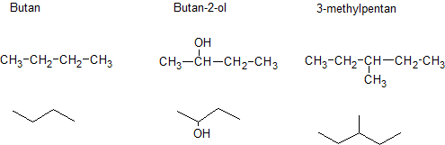
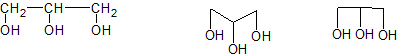
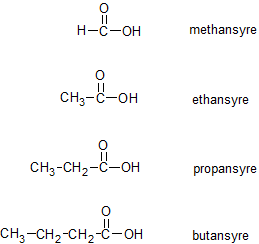
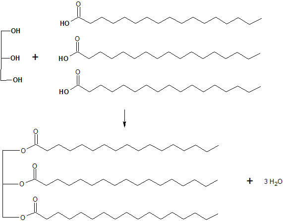
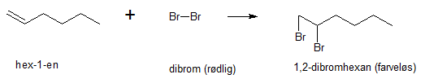
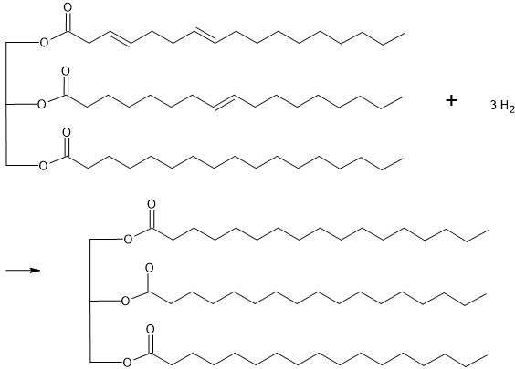
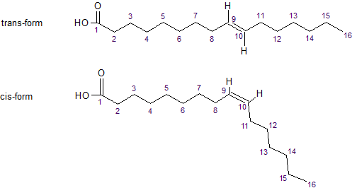

Formålet med dette kapitel er:
Fra dagligdagen kender vi til fedtstoffer som oliven- og majsolie, smør og stegemargarine. Fedtstoffer er en nødvendig del af kosten. Fedtstoffer består af blandinger af stoffer der kaldes triglycerider. Triglycerider kan bygges ud fra glycerol og fedtsyrer. Før vi går nærmere ind på hvad triglycerider, glycerol og fedtsyrer er, skal vi se på zigzagformler.
Fedtsyrer og triglycerider er ret store molekyler. Almindelige strukturformler for disse stoffer bliver derfor let uoverskuelige. Derfor anvender man ofte zigzagformler når man skal tegne store organiske molekyler.
En zigzagformel tegnes på følgende måde:
Det illustreres lettest med en række eksempler, se figur 12.1, hvor en række organiske molekyler er tegnet med både almindelige strukturformler og zigzagformler.

Triglycerider kan, som tidligere nævnt, dannes ud fra glycerol og fedtsyrer. Glycerol er en polyalkohol (dvs. en alkohol med flere hydroxygrupper). Det er en tyktflydende væske. Stoffet kaldes også glycerin. Det systematiske navn er propan-1,2,3-triol. Figur 12.2 viser strukturen af glycerol, både med almindelig strukturformel og med to lidt forskellige zigzagformler.

Figur 12.3 viser de fire første stoffer i en stofklasse der hedder carboxylsyrer. Bemærk ligheden i strukturen, alle stoffer indeholder gruppen -COOH. Det er netop denne gruppe der kendetegner en carboxylsyre. Bemærk også systematikken i navngivningen, de næste carboxylsyrer hedder naturligvis pentansyre, hexansyre, heptansyre, osv.
Vi definerer fedtsyrer som carboxylsyrer der opfylder to betingelser: der er mindst fire carbonatomer i kæden og der er ikke forgreninger i kæden. De tre første carboxylsyrer på figur 12.3 er altså ikke fedtsyrer, men butansyre, pentansyre, osv., er fedtsyrer.
De fedtsyrer vi skal omtale i forbindelse med triglycerider (se næste afsnit) har lange carbonkæder, typisk 12-20 carbonatomer. De vil endvidere næsten altid have et lige antal carbonatomer. Der er også mulighed for fedtsyrer med dobbeltbindinger i carbonkæden.

Vi er nu endelig klar til at se på hvad et triglycerid er. Et molekyle triglycerid kan dannes ud fra ét molekyle glycerol og tre molekyler fedtsyre. Fedtsyrerne kan være ens eller forskellige. Ved reaktionen dannes der endvidere tre molekyler vand. Et reaktionsskema er vist på figur 12.4.

Såfremt triglyceridet er dannet ud fra tre ens fedtsyrer, kalder vi triglyceridet for simpelt. Såfremt fedtsyrerne er forskellige, kalder vi triglyceridet for blandet.
Figur 12.5 viser nogle eksempler på fedtsyrer som triglycerider er opbygget ud fra (bemærk at der på carbonatomernes plads, er indsat et nummer). Det ses at fedtsyrerne er forskellige på to måder, dels har de forskellig kædelængde, dels har de forskellig antal dobbeltbindinger.
[Figur 12.5: ] Figur 12.5: Eksempler på fedtsyrer (smp = smeltepunkt). Bemærk, at der benyttes ikke-systematiske navne.Vi definerer nu følgende:
Et triglycerid kan vi ligeledes definere som mættet, hvis der ikke er dobbeltbindinger i de tre fedtsyrekæder. Er der dobbeltbindinger i en eller flere af kæderne, er triglyceridet umættet.
Hvorvidt triglycerider er opbygget ud fra mættede, enkeltumættede eller flerumættede fedtsyrer, har betydning for sundhedsværdien af triglyceridet. En hovedregel er, at man skal undgå for meget mættet fedt.
Dobbeltbindinger kan påvises ved tilsætning af dibrom til et stof. For nemheds skyld vil det her blive forklaret ud fra hex-1-en (der ikke er en fedtsyre), der indeholder én dobbeltbinding. Ved tilsætning at dibrom til hex-1-en sprænges dobbeltbindingen og der dannes stoffet 1,2-dibromhexan. Se figur 12.6.

Dibrom opløst i vand er rødbrunt. 1,2-dibromhexan er derimod farveløst. Dvs. at ved reaktionen forsvinder den rødbrune farve. Hvis der ikke havde været nogen dobbeltbinding, kunne reaktionen ikke finde sted, og den rødbrune farve ville ikke forsvinde. Dibrom kan altså anvendes som en test af om der er dobbeltbindinger. Tilsæt dibrom, og hvis den rødbrune farve forsvinder er der påvist dobbeltbindinger. Dette gælder også i de lange fedtsyrekæder i triglycerider.
Der gælder følgende for smeltepunktet af fedtsyrer:
Bemærk, at disse regler er i overensstemmelse med smeltepunkterne for fedtsyrerne på figur 12.5.
Triglyceridernes smeltepunkter afgøres af de fedtsyrer de er dannet af.
Plantemargarine er fremstillet ud fra planteolie. Planteolier har lave smeltepunkter, så de er flydende ved stuetemperatur. Margarine skal være på fast form ved stuetemperatur. En måde at ændre smeltepunktet (i opadgående retning) for et triglycerid, er at fjerne dobbeltbindinger i carbonkæderne. Dette kan gøres ved at tilsætte dihydrogen, hvorved dobbeltbindingerne sprænges. Denne proces kaldes for hærdning. Se figur 12.7. Bemærk at reaktionen med dihydrogen er en additionsreaktion, ligesom tilsætningen af dibrom.

En dobbeltbinding (C=C) i en fedtsyre fastlåser de to C-atomer i bindingen og giver fedtsyren et knæk. De to H-atomer ved dobbeltbindingen kan enten sidde på samme side af knækket, eller på hver sin side. Dette giver to forskellige geometriske former af fedtsyrekæden. De to former kaldes for trans (hvis H-atomerne sidder på modsatte side) og cis (hvis H-atomerne sidder på samme side). Se figur 12.8. Transfedtsyrer regnes for sundhedsskadelige. Man kan derfor købe margarine der er fri for transfedtsyrer.
